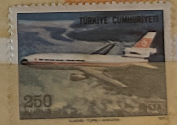
| SOURCE | TITLE| IMAGE MATCH | click to source page |
| HipStamp | Turkey C56 - Used - DC10 (cv $0.30) | Europe - Turkey, Air Mail Stamp / HipStamp | 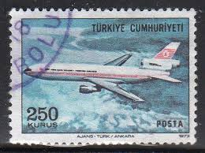 |
| Alamy | Dc 10 airplane hi-res stock photography and images - Alamy | 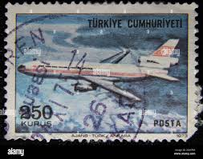 |
| Dreamstime.com | Airplane Douglas DC-10-30 editorial stock image. Image of correspondence - 263594004 | 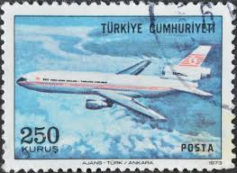 |
| Is there any value to these stamps? | 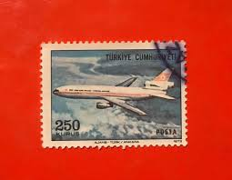 | |
| kitantik | Mektup Zarfından Kesilmiş / Postadan Geçmiş Pul Filateli - Damgalı - UÇAK, 250 KURUŞ - Türkiye Cumhuriyeti - Efemera - kitantik | #16802405007538 | 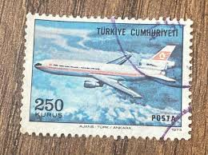 |
| HipStamp | Turkey Scott # C56, pair, used | Europe - Turkey, Air Mail Stamp / HipStamp | 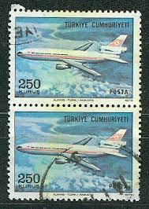 |
| Dreamstime.com | 170 Dc Post Stamp Stock Photos - Free & Royalty-Free Stock Photos from Dreamstime | 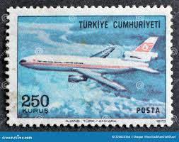 |
| Shutterstock | 10 Juni 2025 - Jakarta, Indonesia: Foto Stok 2644966497 | Shutterstock | 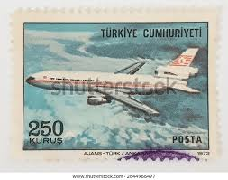 |
| eBay | Airline Tray Table | eBay | 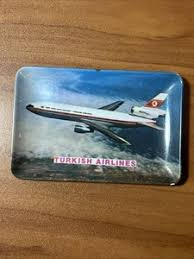 |
| WorthPoint | THY Turkish Airlines DC-10 Douglas Archive Drawing | #159646464 | 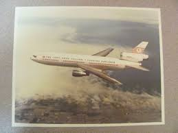 |
| Dreamstime.com | 344 Mcdonnell Douglas Dc 10 Stock Photos - Free & Royalty-Free Stock Photos from Dreamstime | 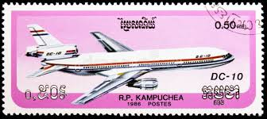 |
| eBay | UNPOSTED POSTCARD - DC 10 -30CF - JETLINER | eBay | 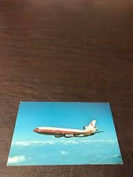 |
| Shutterstock | Cambodia Circa 1986 Cancelled Postage Stamp Stock Photo 2085960847 | Shutterstock | 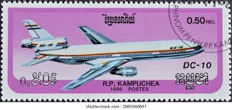 |
| Leonard (javierhudson0080) - Profile | Pinterest | 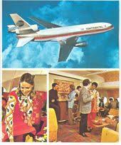 | |
| Airmail stamps featuring DC10 aircraft in Kampuchea | 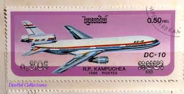 | |
| Etsy | Framed Stamp Art- Used Cambodia Postage Stamp - Douglas DC-10-30 - Etsy | 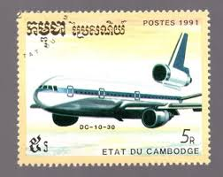 |
| eBay | LOT OF 6 AIRLINE POSTCARDS National JAL Piedmont JUNKER DC-10 747 737 Cockpit | eBay | 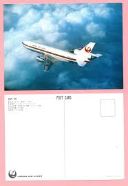 |
| eBay | Continental Airlines Collectibles Postcards for sale | eBay | 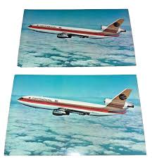 |
| eBay | Old Aviation Postcard - Japan Airlines - DC-10 Airplane | eBay | 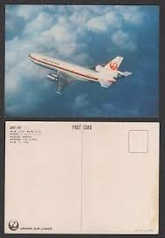 |
| SFO Museum | Company | Malaysia Airlines | Objects | SFO Museum | 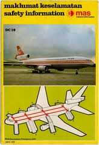 |
| Colnect | Stamp: DC-10 (Thailand(Thai Airways International, 25th anniversary) Mi:TH 1120,Sn:TH 1108,Yt:TH 1099,Sg:TH 1199,Tha:TH 1091 📮 | 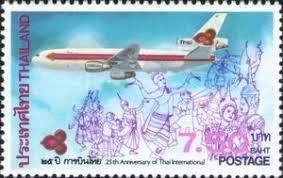 |
| Simple Flying | Once The Deadliest Single-Plane Accident Ever: Turkish Airlines Flight 981 | 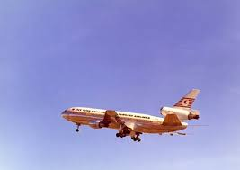 |
| Vintage - 𝙏𝙒𝘼 １０１１ @topfans | Facebook | 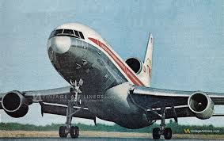 | |
| Turkish Airlines | Images Archive | Press Room | Turkish Airlines ® | 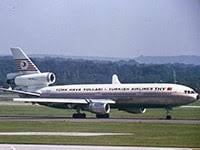 |
| WordPress.com | Turkish Airlines DC-10 (TC-JAV) / Le DC-10 turc (TC-JAV) | Path to Ermenonville, Paris | 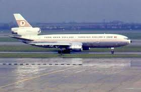 |
| eBay | IBERIA SPAIN AIRLINES DC 10-30 playing card vintage one card | eBay | 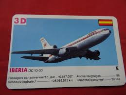 |
| X | ✈️ The first wide-body aircraft to join our fleet, all the way back in 1972. Pretty cool, huh? #TurkishAirlines #TBT | 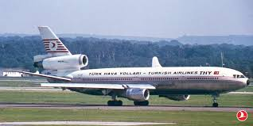 |
| Internet Archive | United Airlines DC-10 Postcard : United Airlines : Free Download, Borrow, and Streaming : Internet Archive | |
| WorthPoint | Laker Airways Inflight Magazine "Skylines" Number 2 March 1979 | #465780039 | 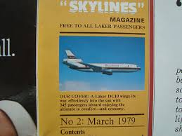 |
| eBay | LOT AVIATION POSTCARDS TWA PAN AM MARTINAIR QANTAS DELTA SWISSAIR CONCORDE | eBay | 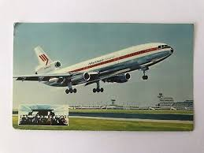 |
| Aviation Safety Network | Accident McDonnell Douglas DC-10-10 TC-JAV, Sunday 3 March 1974 | 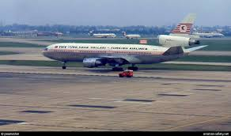 |
| Nila Fine Art | United Airlines DC-10 Framed Poster - Nila Fine Art | 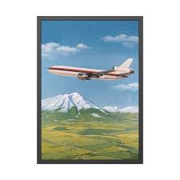 |
| eBay | Lot of 3 Vintage Airline Postcards TWA L-1011 DELTA 747 WORLD AIRWAYS DC10 | eBay | 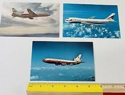 |
| Key Aero | Forum Virtual Art Gallery | Key Aero | 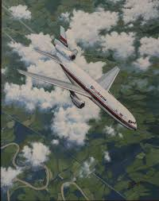 |
| 900+ TWA ideas in 2026 | twa, vintage airlines, vintage aircraft | 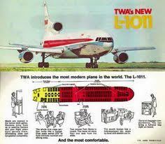 | |
| TikTok | Electric doors have been abandoned in several cases, although it seems... | TikTok | 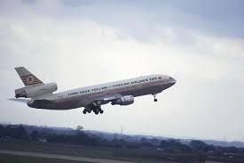 |
| Flight Path Museum LAX | Museum Exhibits - Flight Path Museum LAX | 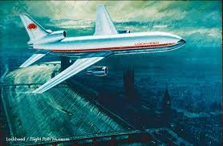 |
| X | OTD in 1974: Turkish Airlines 981, a DC-10, crashes in Ermenonville (France). All 346 aboard die, worst air disaster at the time. Cause: cargo door burst open due to a design flaw - | 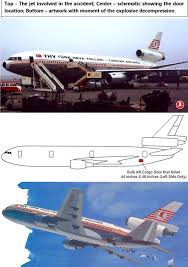 |
| bplaced.net | Swissair | |
| eBay | Airplane Postcard JAL Japan Airlines Douglas DC-10 In FLight PI Publisher CD8 | eBay | 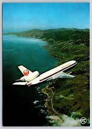 |
| ProBoards | China Airlines DC-10? | HJG Message Boards | 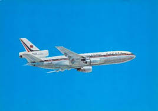 |
| A door. Just a door. That's what brought down an entire DC-10… : r/AviationHistory | ||
| A wonderful photo of a wonderful plane. (Lockheed L-1011 Tristar) : r/aviation | 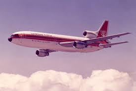 | |
| Etsy | Vintage DC-10 Airplane Photo Set: Delta, Iberia, KLM Ephemera - Etsy | 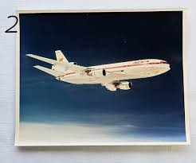 |
| eBay | Airline Postcards TURKISH AIR DC 10-10 TC-JAU | eBay | 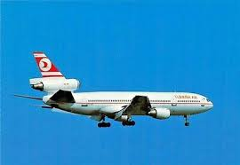 |
| McDonnell Douglas DC-10-10 (Turkish Airlines) | 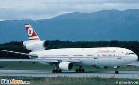 | |
| Internet Archive | Iberia DC-10 Postcard : Iberia : Free Download, Borrow, and Streaming : Internet Archive | 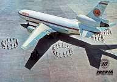 |
| Fine Art America | N1812U United Airlines Douglas DC-10-10 at SFO Photograph by Wernher Krutein - Fine Art America | 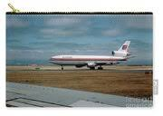 |
| lastdodo.com | Garuda Indonesian Airways 1949-1979 100,- (1979) - Indonesia - LastDodo | 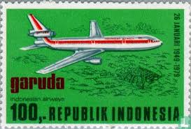 |
| Under Pressure. | 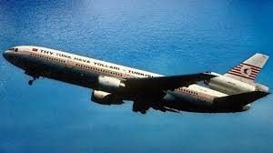 | |
| aviationfile.com | Turkish Airlines Flight 981: The Deadly Paris Crash 3 March 1974 | aviationfile-Gateway to Aviation World | 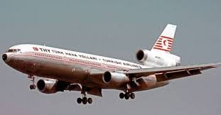 |
| YouTube | If plane could talk series part 16:tuskish airlines flight 981 - YouTube | 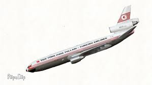 |
| AirHistory.net | Aircraft Photo of TC-JAV | McDonnell Douglas DC-10-10 | THY Türk Hava Yolları - Turkish Airlines | AirHistory.net #586535 | |
| New Shepard NS-23 had a booster engine failure : r/SpaceXLounge | ||
| 36 TK981 TC-JAV DC-10 Crash Paris 1974 ideas | turkish airlines, airlines, aviation | ||
| The crash of Turkish Airlines flight 981: Analysis : r/CatastrophicFailure | ||
| Infinite Flight | What's your favorite old livery? - Page 2 - Real World Aviation - Infinite Flight Community | |
| eBay | McDonnell Douglas MD-11 Progress China Airlines 1989 Brochure | eBay | |
| YouTube | PLANE GUYS - DC-10 CRASH REVELATIONS #dc10 - YouTube |